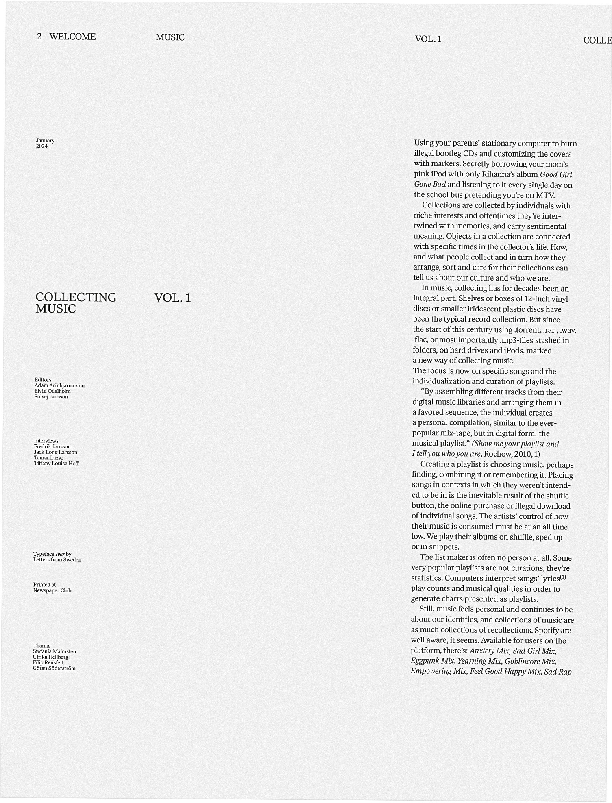
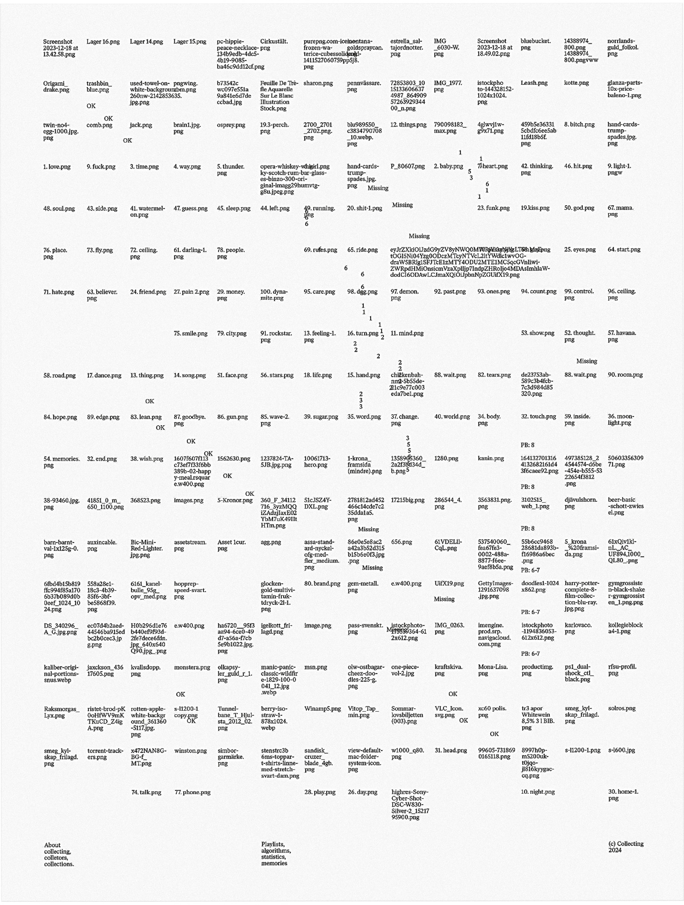
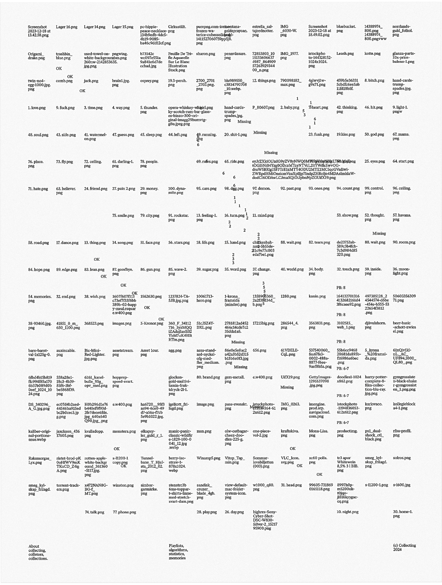

Bookland
Mini identity, illustration, web page and concept development of a pop-up book shop, taking place at Beckmans' yearly graduation exhibition. 'Bookland' is a play on the history of the international ISBN barcode system. Read about it on Wikipedia, it's very cute. Designed by Adam Arinbjarnarson. Produced and realised in collaboration with Maja Ringsäter, Tiffany Louise Hoff and Visual communication class of 2025 at Beckmans.
Cell animation and logo design.
Website complementing the launch of Bookland. bookland.beckmans.se
 Sketch of laser cut street sign.
Sketch of laser cut street sign.
Orionteatern
3d animated anniversary poster for Orionteatern, a small scale theatre in Stockholm, Sweden. The theatre has a long history of hosting performances with soil, animals and dirty stage design. On one occasion, there were live horses and puddles of water on stage. My poster was designed to reflect this in honour of the theater's 40th anniversary. In the design, I combine images and handwriting sampled from the theatre's archive and the general composition samples the dark (and somewhat rough) physical space.
Designed and animated in Blender and Photoshop. Part of a collaboration with Beckmans College of Design, led and supervised by Sophia Wood.
50x70 cm poster print, displayed at Orionteatern.
Tyda
Hand assembled poster and cell animation. The project and its process was created through research on the concept of 'Folkhemmet'. On the topic of Swedish identity, there are countless parallell interpretations and connotations. Tyda aims to visualise this process, being redefined, again and again by different actors and authors.
The project was exhibited at the show Ett hem in Vandalorum art museum. The poster was assembled with laserjet print on post-it notes, overlapping and creating trails and layers of meaning.
Designed in collaboration with Maja Ringsäter and Måns Horning, as an educational exercise in designing visual identity. Supervised by Sophia Wood.

 70x100 cm poster.
70x100 cm poster.
Web design for Julia Åberg. juliaaberg.com
There is no such thing as magic
Narrative and visual identity for a collaborative project about AI and its societal and environmental impact. The visual identity was designed to reflect and communicate the work of scientific researchers at the Beijer Institute and encourage reflection on the realities of generative AI, for example its environmental and social impact. The project was exhibited at Svenskt Tenn in Stockholm, 2024. It showcased sculptural works on the theme of AI, by students at Beckmans College of Design.
Conceived, designed and produced in collaboration with Maja Ringsäter and Solvej Jansson.

Printed booklet/poster.
Sketching implementations of the visual identity.
Illustration and animated event flyer for a knitting night.
Design and Figma prototyping for Sdvvvorks, blockchain for artists. Made during internship at Research and Development.
Luftslott is Under Construction
Open call posters for Luftslott's third issue. Graphic (re)design and concept development. Luftslott is a magazine for visual and text based art, led by Agnes Nebrelius. Posters designed and developed around the idea of under construction, showcasing the designer's (my) indecisiveness.


Exhibition poster design for Valand photography.
 Illustrated poster for student union breakfast club. Organised with Måns Horning.
Illustrated poster for student union breakfast club. Organised with Måns Horning.Trädgården Pride Garden
Art direction and concept development for Trädgården's 2024 iteration of its annual Pride clubs. Image treatment/collage, and graphic design. Designed around the concept of disgust.


Collecting
An educational exercise in editorial design and art direction, resulting in a concept for a magazine about collecting. The project consists of a 6 page tabloid magazine, an essay, four interviews, one playlist and small website.Collecting uses 300 found images and a handful of minimal quotes from conducted interviews to tell stories about what making playlists means for different people and how the streaming era affects listening habits. Made in collaboration with Solvej Jansson and Elvin Odelholm. Supervised by Malmsten Hellberg.




 

 Type treatment and event flyer design.
Type treatment and event flyer design. Photography by Agnes Nebrelius.
'This is difficult to read because it was difficult to make',
excerpt from graduation project.
back ↑
I (Adam Arinbjarnarson) am a designer interested in graphic identity applied to print, digital and motion. I utilise typography, animation, image editing and programming. I define and develop concepts with and for collaborators, to create both meaningful and strategic design. Tools I rely on and use include:
Listening, speaking, writing
InDesign, Photoshop, Illustrator
After Effects, Premiere Pro
Figma (design and prototyping)
Cavalry, Blender
HTML, CSS, JavaScript, ChatGPT (for programming)
Handlettering, pencil sketching and illustration
Currently, I work for an international architecture and design studio. Here, I design visual identities as well as digital or spatial implementations of graphic design, collaborating across diciplines:
Snøhetta
Oslo, NO
2025-
I recently graduated from an artistic, small scale and sometimes experimental design school in Stockholm, heavy on conceptual thinking and challenging interdisciplinary collaborations:
Visual Communication, BFA
Beckmans College of Design
2022-2025
A while back, I assisted two (brilliant) graphic designers that run a design studio in Stockholm. During my internship with them, I contributed with web design, 2d+3d animation and graphic design, collaborating with UX designers, front- and back-end developers or printers to realise design projects:
Research and Development
Stockholm, SE
2024
Fellow designer Peter Ström has intitiated an award(!) as part of a resarch project on preservation and archival of digital design. In this project I contributed with research on Swedish web design projects and was part of the jury selecting nominees and recipients:
Svensk Webbkonst 2021-2024
w3.svenskwebbkonst.se
Besides this website, I regularly post work in progress and some trial and error-stuff on an instagram account and on an archive webpage:
Occasionally, I do freelance work like designing posters, printed matter or web projects. Please contact: